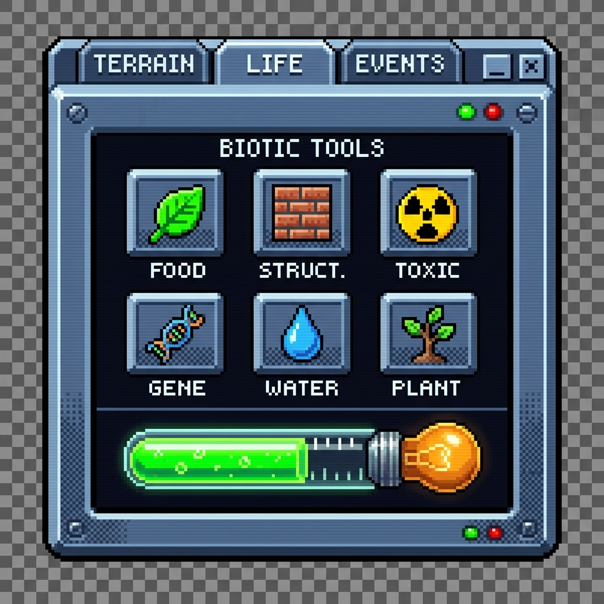

Interactive mockup of the style specified in
tool_window_pixel_overhaul.md,
built from the real tool set and the real 32×32 icons in
crt_console_assets/. Reference:
tool_window_crt_console.jpg.
Every frame — the case, the tabs, the screen recess, the tool plates,
the wells and both dithers — is a border-image sliced out
of that reference by scripts/slice-crt-frame.py, which recovers
its native 200×200 canvas from the 5.12× JPEG upscale first. So
the bevels here are the art's own pixels rather than a box-shadow that
approximates them. See §1.4 of the spec for the inventory.
Every control below is one of the spec's open questions, so they can be judged by looking rather than by reading. Tabs switch, tools arm and disarm, the brush drags, actions hover and fire.
200px wide at 1×, derived from the icon rather than copied from the mockup: 32px icon → 40px well → 48px plate. Integer zoom only.

A 200×200 art canvas upscaled 5.12×. Its six-button grid shows an invented tool set — WATER, GENE and PLANT do not exist — so only its materials transfer, not its layout.
| Control | Spec | What to look for |
|---|---|---|
| Chrome hue | §0 | The blocking one. Slate matches the icons exactly and orphans the rest of the green HUD; phosphor keeps the HUD consistent and makes the icons the only chromatic thing on the panel. |
| Brush thumb | §2.7 | The bulb introduces a fifth hue family for a control carrying one number, and glows next to the icons. Toggle it while looking at the grid, not at the tube. |
| Status LEDs | §2.8 | Switch Sim state with LEDs bound: if the movement reads as meaningful, keep them. If not, decorative status lights on a real simulator are the detail that reads as sloppy. |
| Panel title | §2.3 | Kept, it repeats the active tab's name. Dropped, it reclaims a row. |
| Orphan row | §4.1 | Terrain has 5 tools and Events has 1 in a 3-wide grid. Check both tabs — stretching works well for Erase and badly for Meteor. |
The chrome is not a reading of the reference any more, it is the
reference: every frame is a border-image cut from the art's
own pixels by scripts/slice-crt-frame.py. Three things still
differ, all of them deliberate.
The tab trough. The reference sinks its tabs into a recessed strip 16px tall, so their tops touch the outer black line. Here they float on the bezel, which lets the case close up into one even 6px ring — the ring the sides and bottom already draw. It is the one place the panel is built out of two pieces of the art rather than one. The dither band in a well is 11px rather than 6, because this well is 41px where the art's is 22; the art's proportion is kept, not its pixel count. The brush tube is not sliced at all — it is glass with 3px rounded caps, the one place the square-corner rule genuinely breaks, and the spec's open question anyway.
Still missing: colour tab glyphs for terrain,
life and events. Slice widths are declared in
px and do not scale, so the panel uses CSS zoom for integer
scaling and wants a current browser.
{kind=link}